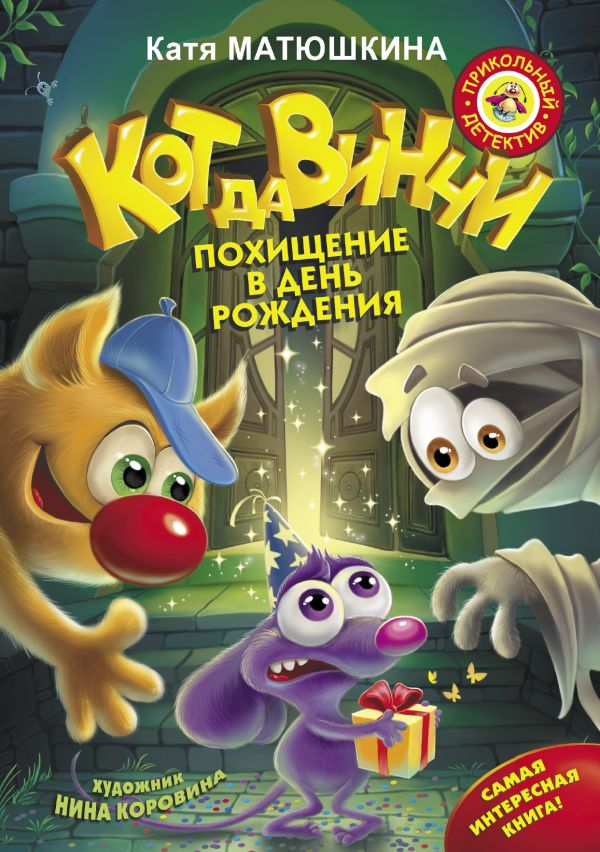

Новости
Новости июня
пятница, 19 июня 2020 год
вторник, 16 июня 2020 год
Уважаемые читатели!
С 17 июня Краснопольская библиотека открыта для посещения. Если вы планируете посетить библиотеку, вы обязаны соблюдать социальную дистанцию и носить маску.
среда, 10 июня 2020 год
Скоро День России. В онлайн-формате пройдут праздничные акции, в которых может участвовать любой желающий.
Всероссийская акция «Добро в России». Участники акции могут поздравить соседей с Днём России, отправив анонимное поздравление в виде открытки или символического подарка.
Любители русской литературы смогут участвовать во Всероссийском онлайн-челлендже «Русские рифмы», прочитав стихи или отрывки из знаменитых произведений классиков русской литературы. Чтобы присоединиться к эстафете, необходимо записать на видео своё прочтение отрывка стихотворения и опубликовать видеоролик в Instagram или «ВКонтакте» с хештегом #РусскиеРифмы, а затем передать эстафету своим друзьям.
Онлайн-флешмоб для книголюбов «Русское слово». Участники прочитают стихотворения российских классиков или отрывки из любимых книг отечественных писателей. Подробнее об акции в сообществе «Большая перемена» в социальной сети «Вконтакте».
Желающие проверить свои знания о победах, достижениях и выдающихся личностях в современной истории нашей страны смогут сдать «Гражданский экзамен». С 9 по 12 июня 2020 года на сайте «Гражданский Экзамен» будет проводиться тест к Дню России. По итогу прохождения «гражданского экзамена» участники получат электронный именной сертификат о его прохождении.
Присоединяйтесь!
воскресенье, 7 июня 2020 год
суббота, 6 июня 2020 год
Новости мая
четверг, 21 мая 2020 год
Уважаемые читатели!
С 22 мая из-за опасной вирусной обстановки в Сунском районе Краснопольская библиотека приостанавливает обслуживание читателей до особого распоряжения.
вторник, 19 мая 2020 год

четверг, 14 мая 2020 год
Уважаемые читатели!
С 12 мая Краснопольская библиотека открыта для посещения. Если вы планируете посетить библиотеку, вы обязаны соблюдать социальную дистанцию и носить маску.
пятница, 8 мая 2020 год
Новости апреля
четверг, 30 апреля 2020 год
Суходоев Иван Андреевич
Суходоев Виталий Ильич
Суходоев Семён Павлович
Байбородов Алексей Гаврилович
Суходоев Алексей Григорьевич
Изместьев Александр Вениаминович
Кондаков Пётр Николаевич
Зыкова Евдокия Матвеевна
Олинов Михаил Васильевич
Иванцов Алексей Николаевич
Бобошин Фёдор Васильевич
воскресенье, 12 апреля 2020 год
Уважаемые читатели!
В связи с коронавирусом нерабочие дни продляются до особого распоряжения. Берегите себя и своих родственников! Оставайтесь дома!
воскресенье, 12 апреля 2020 год
Творческая работа Фалалеевой Е.Е. «История деревни Краснополье»
Это было в далёком 17 веке. Парень один прятался от службы. Да не один, а с невестой. Ведь тогда забирали в армию на 25 лет. Поначалу выкопали землянку на угоре.
Там и жили. Родилось два сына.
Когда они стали взрослыми, построили деревянный дом около тропинки на ключ. Считается, что от этих братьев пошла фамилия Суходоевых.
Деревня стала называться так из-за красных глин, полей.
Раскинулась деревня на берегах речек Ванчаз и Красной.
До Суны 11 км, а до Кирова – 103 км.
Кругом дремучие еловые леса.
Чтобы построить избы, Суходоевы рубили лес, корчевали пни.
В 1885 году в 24 домах проживал 161 человек. Имели жители 25 коров, 38 лошадей.
Вязанием рукавиц занимались 10 человек, а торговлей по Нолинскому уезду – 17.
В 1900 году уже стояло 26 домов.
На самом краю деревни поставили склады для зерна.
Крестьяне платили подать (налог) зерном со своего земельного надела.
Если семья была с двумя лошадьми, то на одной пахали, а на другой боронили.
Сеяли рожь, овёс, ячмень, лён. Жители имели наделы и в лесу, за которыми ухаживали. Ведь он давал и еду, и дрова для печей, и лес для избы, жерди для заборов.
Во всех домах стояли ткацкие станы. Зимой женщины, девушки и дети пряли и ткали.
Для покраски холстов применяли кору деревьев и выжимку от трав.
В 20-е годы дети учились по домам. Классов было четыре. Учеников мало было.
Учителя менялись часто, например: К. Бурова, М. Круглова, В. Ложкина, Н. Бобошина.
В 1926 году 33 избы стояли на одной улице, лицом на юг, на деревню Меркуши.
175 человек жило тогда, из них детей – 110. В памяти остались лишь некоторые семьи: Суходоевы Яков и Матрена с детьми, Назар и Катя с детьми, Федя и Федосья, Прокоп и Анна, Гриша и Варя, Саша и Катя, Вася и Дуся...
В 1930 году появилось ещё 4 дома.
Много мастеровых людей проживало в Краснополье. Столяры помогали друг другу. Столяр Андрей Васильевич Суходоев делал рамы для окон и комоды. Степан Алексеевич Суходоев катал валенки.
Дошла коллективизация и сюда.
В 1930 году была создана сельскохозяйственная артель «Краснополье».
Первые председатели – Суходоевы Кирилл Яковлевич и Сергей Иванович.
В первый год только 20 хозяйств вступило в колхоз.
В конце 1932 года все взрослые стали колхозниками. Работали на трудодни.
Каждая семья должна была платить налоги: молоко, масло, мясо, яйца, шкуры, шерсть.
Валентина Ивановна Суходоева вспоминала в 1983 году, что каждое хозяйство должно было сдать 40 кг мяса в год, 120 л молока с коровы. Иногда жители складывались семьями и покупали мясо, чтобы сдать его.
Не было столько развлечений у детей в 30-е годы, как теперь. Помогали по дому, как могли. Скот пасли. Убирали хлеб. Лён теребили.
На подводах ездили. Из деревни Малые Клесты перевели и построили начальную школу. Это было в 1932 году. Сейчас классы были переполненные.
Учителя были: А. Домрачева, З. Наумова, Р. Плотова, Е. Краева, П. Плошкина. После войны в школе появились новые учителя: сёстры Суходоевы Валентина Ивановна и Клавдия Ивановна, Алексей Григорьевич Суходоев, Валентина Серафимовна Кондакова. Начальная школа просуществовала до 1976 года.
На советско-финскую войну 1939-1940 годов ушел один Семён Павлович Суходоев. Точное количество ушедших на Великую Отечественную войну из Краснополья неизвестно. Знаем, что 21 Суходоев домой не вернулся. Почти в каждой семье были похоронки. Воевали мужчины под Ленинградом, Москвой, Сталинградом, Курском, Воронежем. Форсировали Днепр, Вислу.
Дети наравне с взрослыми работали в поле, на ферме. Вместо тракторов и комбайнов по полю ходили жатки.
К примеру, Нине Васильевне Колобовой в 15 лет дали лошадь, и девушка ездила, куда пошлют. Она сеяла, пахала, таскала меши, возила молоко.
В 1949 году колхоз стал больше: в него вошли деревни Шаляпы, Красная Горка, Починок, Трапицыно. В 1952 году колхоз стал называться «Россия». С марта 1952 по 1954 год председателем избрали Екатерину Ивановну Фукалову (Суходоеву). В 1959 году в колхоз «Россия» вошли ещё три колхоза: «Свобода», «Республика», «Победа». Колхоз получил название «Рассвет». В 1965 году из него выделился совхоз «Авангард», а сам был переименован в совхоз. С 1955 по 1960 год председателем был Борис Спиридонович Павловских. С 1960 по 1967 год – Василий Игнатьевич Вычегжанин.
С 12 декабря 1966 года совхоз «Краснопольский» начал свою историю. 15 декабря директором стал Матвеев Вениамин Петрович. Плановиком была Матвеева Раиса Михайловна, техником-строителем Тумбусов Юрий Петрович. Главный агроном – Суходоева Екатерина Ивановна, а главный зоотехник – Шельпякова Софья Васильевна. Главный инженер – Изместьев Геннадий Иванович. Электриком стал Булатов Александр Степанович. Инспектор по кадрам – Иванцов Григорий Семенович. Секретарь – Халявина Нина Алексеевна. Инженер-механик по трудоёмким процессам – Суходоев Алексей Яковлевич. Техслужащая конторы – Ардашева Мария Дмитриевна. Кладовщик – Суходоев Алексей Ефремович. Зав. базы – Пермякова (Навалихина) Вера Алексеевна. Бригадир тракторной бригады – Суходоев Анатолий Степанович. Бригадиры полеводческих бригад – Суходоев Алексей Григорьевич и Лаптев Владимир Прокопьевич. Учётчик – Изместьев Вениамин Иванович. Управляющий – Попцов Аркадий Дмитриевич.
Осенью 1967 года директором совхоза стал 30-летний Геннадий Иванович Самылов. На лошадях ездили в контору в деревне Починок специалисты: главбух Борис Семенович Иванцов из Моденовской, главный зоотехник Софья Васильевна Шельпякова из Красной Горки, главный агроном Екатерина Ивановна Суходоева. На работу не опаздывали. Молодёжь училась в сельскохозяйственных училищах, техникумах. Совхоз платил им стипендии. Началось строительство центральной усадьбы совхоза «Краснопольский». Появился машинный двор с ремонтными мастерскими и пожарным депо, склад материалов, котельная, автостоянка, нефтебаза, крытый гараж для комбайнов. Первый в районе АВМ построен был в Краснополье. Затем возвели КЗС, пилораму, столярный цех, фермы. Появилась общественная баня с прачечной на 20 мест с женским и мужским отделением. Передовики в 70-е годы – Юлия Степановна Суходоева, Валентина Семеновна Колобова, Татьяна Яковлевна Суходоева, Анатолий Степанович Суходоев, Николай Иванович Бобылев, Степан Филиппович Олинов, Борис Семенович Халявин. В 80е годы Валентина Федоровна Суходоева, Лидия Харитоновна Ситникова, Степанида Михайловна Кокорина, Леонид Антонович Варлыгин, Мария Алексеевна Пескишева, Екатерина Александровна Олинова. Сейчас это механизаторы Сергей Бобылев, Иван Суходоев, шофёр Александр Тимофеевич Суходоев, животноводы Елена Пустохина. Сергей Николаевич Бобылев в 2013 и 2014 годах был награжден губернаторской премией. В 2017 году его фото Сергея и его сестры Елены Николаевны Пустохиной на Доске почета Сунского района.
Раньше все в деревне держали коров и пастушили по очереди. Совхозных коров караулили Леонид Варлыгин, Алексей Колобов, Алексей Кряжевских, Николай Кряжевских.
Магазин райпо сначала стоял на Центральной улице напротив дома Екатерины Ивановны Суходоевой. Хлеб привозили верхосунский. Затем построен магазин на углу Центральной улицы на площади недалеко от конторы. Более 36 лет назад возвели большое здание с двумя магазинами: «Продукты» и «Промтовары». Продавцами работали: Суходоева Татьяна Александровна, Гоголева, Суходоева Екатерина Ивановна, Суходоева Анна Кузьмовна, Суходоева Ольга Степановна, Кряжевских Раиса Макаровна, Суходоева Людмила Антоновна, Колобова Татьяна Алексеевна, Симйонка Елена Васильевна, Суходоева Людмила Михайловна, Нина Павловна Мальцева, Татьяна Заболотских, Нина Аркадьевна Чекалкина, Оксана Геннадьевна Коробова.
Сейчас магазин называется «Товары повседневного спроса». Заведующая – Онегова Светлана Аркадьевна.
В 1968 году перевезли из Перелаза медпункт. Тамара Ивановна Попцова стала заведующей. Сначала он размещался в кабинете председателя сельсовета, бывшем здании конторы, потом на угоре на Молодежной улице. Заведующей была до 1999 года Лидия Ивановна Крысова. С 1980 до 1990 года акушеркой стала Попцова Татьяна Александровна. В её зоне обслуживания было 700 человек. Раз в неделю Попцова ездила в Перелаз, где ходила по домам. Физиопроцедуры проводила Вера Николаевна Соболева. Акушеркой работала Елена Викторовна Суходоева. С 1993 года уже 25 лет работает Палкина Наталья Валерьевна.
В 1971 году на улице Центральной вырос сельский клуб, первой заведующей которого была Людмила Петровна Байбородова после библиотечного отделения культпросветучилища. Работы по специальности не было. Поэтому в 1973 году по собственному желанию уволилась и уехала в Киров. Кто только не работал здесь позже. Специалистов не было.
В 1976 году сельский клуб стал называться Домом культуры.
С 1984 по 1992 годы директором ДК был Карам Асманов, а худруком Анна Кулаченкова. Выступал хор, вокально-инструментальный ансамбль. Кинофильмы, танцы, концерты к праздникам, торжественная регистрация брака. Чего только не было! Всегда был полный зал народу. В 1990 году между школой и конторой возвели двухэтажный Дом культуры. Зрительный зал на 300 мест. Кабинет директора, артистическая комната, танцевальный зал на втором этаже, гардеробная. На второй этаж потом переехала библиотека (до 1994 года). С 23 апреля 1993 года директором стала Вера Николаевна Палкина. Дискотеки, конкурсы, интеллектуальные игры, концерты привлекали очень много зрителей и участников. Самый большой праздник – День деревни. «Поле чудес», «Слабое звено», «L –клуб», «Зов джунглей». Дом культуры участвовал в районных конкурсах, смотрах, например: «Вятская хвалёнка», «Играй, гармонь, звени, частушка». В Доме культуры был женский вокальный ансамбль. Пришлось ДК переезжать в здание детского комбината. Кружок фитнеса, глиняной игрушки.
На Молодёжной улице, на угоре в этом же 1971 году построен был детский сад. Галина Михайловна Бухарина заведовала детским садом. В 1980 году в детском саду было 3 группы. 6 марта 1982 года был открыт совхозный детсад в здании, построенном для школьного интерната. Было 4 группы. Посещало его 92 ребенка. Родители платили 8-12 рублей в месяц. В 1982 году в детском саду работали: Бухарина Г.М., воспитатели Нина Ильинична Дёмышева, Зинаида Анатольевна Иванцова, Надежда Ивановна Кондакова, Надежда Петровна Позолотина (Шафигуллина), Татьяна Павловна Бутакова, Надежда Семёновна Кокорина, Галина Александровна Кондакова (Суркова). С 1984 года заведующей детским садом «Родничок» работает Людмила Георгиевна Варлыгина. В 1994 году детсад передали в бюджет сельскому совету. Плата за садик оказалась большой, да ещё некоторые водили по двое детей. Ребят стали оставлять дома. Тогда работники детсада открыли кружки для домашних детей для подготовки к школе. С 6 февраля 2008 года садик занимал две комнаты помещения школы. После капитального ремонта детсад вернулся в прежнее здание. В детском саду проводятся интересные праздники и конкурсы, как, например, «Мистер Родничок». Участвуют в акциях «Фестиваль кормушек», «Сто затей для друзей» (здоровья), «Наряди ёлку». До марта 2018 года управляла садиком Хлебникова Оксана Витальевна, сделала сайт «Родничка». С апреля 2019 года заведующей была Пескишева Дарья Владимировна.
13 февраля 1972 года был организован Краснопольский сельский совет народных депутатов. Председателем его был Владимиров Пётр Васильевич. Секретарём стала Халявина Нина Алексеевна (до 1997 года). Бухгалтер – Рязанова Любовь Ивановна. Председателями сельсовета были: Суходоева Екатерина Ивановна, Кондаков Борис Николаевич. С декабря 1993 до апреля 2002 года главой сельского округа была избрана Нина Павловна Мальцева. Отвечала за состоянием всех учреждений (медпункта, детсада, клуба, библиотеки, котельной). Хлопот было много с трёхэтажкой. Велась похозяйственная книга, как и всегда. Составлялся бюджет. Работал женсовет, санитарная комиссия, уличные комитеты, административная комиссия, жилищная комиссия. Связь была с ветеранской организацией. В 90-е годы действовала дружина в составе Жигалова А.П., Манылова Н.В., Байбородова В.П., Соболева В.М. С 1 апреля 1999 по 2007 год Попцова Татьяна Александровна работала специалистом в сельсовете. С 1 июля 2011 до марта 2016 года она же стала специалистом администрации Кокуйского сельского поселения. С 28 марта 2016 года до лета 2018 года работала Власова Алеся Владимировна. Она сменила место жительства. Постоянного работника нет сейчас. Приезжают специалисты из администрации Кокуйского поселения.
В 1972 году стало функционировать отделение почтовой связи. Начала работать Владимирова Валентина Арсентьева. С июля 1989 года по 2008 год заведующей стала Вера Алексеевна Самосудова. При ней помещение утопало в цветах. Несколько раз отделение связи признавали образцовым. С 2008 по 2014 год начальником была Онегова Светлана Аркадьевна. Сейчас работает Семенихина Светлана Ивановна.
20 марта 1973 года считается днём открытия библиотеки.
Первый библиотекарь – Галина Васильевна Самылова – работала до 1978 года. Сначала библиотека размещалась в пристрое сельского клуба площадью 48 кв. м., несколько месяцев в здании сельсовета. Председатель профкома совхоза «Краснопольский» Суходоев Алексей Григорьевич дал библиотекарю 100 рублей, на которые в сунском магазине были куплены первые книги. Затем завезли около 300 книг из Коровкинской библиотеки, позднее пополнение пришло из Перелазинской. За первый год работы 91 человек записался сюда. Детей было 32.
С 21 августа 1979 по 15 августа 1980 года работала Валентина Викторовна Дряхлых. В 1979 году уже 252 читателя было. Поступило 720 изданий, а книговыдача была 5111 экземпляров. Библиотека находилась в бывшем здании конторы на Центральной улице недалеко от бани и сельсовета. Площадь была 96 кв. м. В 1979 году прошла централизация. Сельская библиотека стала филиалом Сунской Центральной библиотеки. Новые книги приобретались и обрабатывались в отделе комплектования п. Суна. С 26 ноября 1980 до 22 июня 1982 года библиотекарем была Людмила Анатольевна Бородавкина.
Со 2 августа 1982 года библиотекарем после окончания Кировского культпросветучилища стала Елена Евгеньевна Опарина (Фалалеева). В библиотеке был телевизор, радио, радиола. Библиотекарь привозила новые книги из Суны на совхозном автобусе. Тогда он был бесплатный. 270 читателей (82 – дети) было в 1982 году. 2137 посещений. 6167 – книговыдача. Библиотекарь летом помогала переворачивать сено в валках, перебирала картошку, собирала совхозную картошку в телеги. Работала на зерне, на весовой во время уборки зерновых. В столовой совхозной тоже довелось поработать. Гребла навоз на ферме. Печатала плакаты о распорядке работы доярок, телятниц, скотников для красного уголка. Ходила с журналами на фермы. Печатала объявления на мероприятия по приказу председателя сельсовета или директора клуба. Проводила конкурсы лучших читателей, читающих семей.
В библиотеке работали кружки для детей «Парус», «Радуга», «Буратино», экологическое агентство «Лесовичок и К», английского языка, для старшеклассниц «Посиделки». Затем для детей из детсада кружки «Добрые, волшебные слова», «Вятские светлячки», «Библионик». Для Нади Фалалеевой на дому были кружки по экологии и по рисованию. Летом проводилось для детей и подростков много игр, конкурсов. Библиотека участвовала в областных, районных конкурсах «Голос ребенка», «Эко-фантазёр», «Сова – птица 2005 года», «Чайка – птица 2006 года», Дней защит от экологической опасности, Форуме юных геральдистов, других. Ездили на экскурсии в Кировскую областную библиотеку имени Герцена и Кировскую областную детскую библиотеку имени Грина. Давали автобус в совхозе. 6 раз переезжала библиотека. Теперь обитает на первом этаже бывшей школы в 2 комнатах. С 21 декабря 2018 года функционирует сайт библиотеки, созданный Фалалеевой Надеждой Сергеевной.
26 января 1976 года открылась восьмилетняя школа для 76 учеников. Для ребят из Туров был интернат. Директор – Дмитрий Петрович Стяжкин. По литературе и русскому языку учили: Надежда Ивановна Кондакова и Нина Николаевна Мышкина, по математике – Надежда Васильевна Пескишева (также по физике) и Надежда Степановна Ощепкова (также по химии). По истории и труду – Николай Алексеевич Вычегжанин. По физкультуре Антонина Афанасьевна Манылова. Августа Игнатьевна Стяжкина была воспитателем в интернате. Валентина Ивановна Суходоева и Валентина Серафимовна Кондакова учили начальные классы. Весной 1976 году выпускники посадили берёзки у школы. Потом на смену ветеранам пришли новые учителя: Галина Михайловна Суходоева, Светлана Михайловна Суходоева, Людмила Ивановна Семиглазова, Пётр Николаевич Дрягин, Зинаида Григорьвна Дрягина, Валентина Александровна Фоминых. С 1981 года директором школы стал Н. Вычегжанин, с 1982 года – Александр Николаевич Токмаков. В 1982 году школа стала средней. Почти 140 ребят были учениками. В 1988 году интернат закрыли, потому что в Турах появилась своя школа. Директорами были также В. Резвых, З. Дрягина, Александр Иванович Изместьев, Людмила Алексеевна Изместьева, Галина Михайловна Суходоева. В 2004 году школа стала основной, училось около 50 ребят. С 2008 года директором стала Оксана Витальевна Хлебникова. Было 11 учителей и около 20 школьников. В 2012 году школа стала начальная. 20 июня 2013 года школа в Краснополье была ликвидирована.
С 1982 по 1996 годы в деревне работал быткомбинат. Пескишева Татьяна Михайловна – приёмщик-кассир. Швеёй была Загайнова Татьяна Анатольевна, а потом Комышева Елена, Пьянкова Людмила. Народ заказывал шить халаты, платья, по каталогу обувь, трикотаж. Перелицовывали старые подушки. Приезжал парикмахер Семенихина Валентина.
12 июня 1995 года было открытие памятника воинам, погибшим в годы Великой Отечественной войны. 7 участников войны и 3 солдатские вдовы дожили до 50-летия Победы. Выступали: глава администрации Михеев А.М., военком Чернявский В.Н., директор художественного музея имени Васнецовых Носкова А.А., директор совхоза «Краснопольский» Востриков Г.В. От имени ветеранов выступала Евдокия Матвеевна Зыкова.
Деревня была газифицирована в 2011 году.
Летом 2016 года проведена реконструкция водопровода.
Составила:
ведущий библиотекарь Краснопольской библиотеки Фалалеева Е.Е. 28 марта 2018 года.
Использованы воспоминания старожилов, жителей деревни, книга Зворыгина «Земля Сунская», газета «Родной край-Суна».
суббота, 11 апреля 2020 год
воскресенье, 5 апреля 2020 год
Уважаемые читатели!
В связи с коронавирусом нерабочие дни продлятся до 10 апреля включительно.
Берегите себя и своих родственников! Оставайтесь дома!
Новости марта
суббота, 28 марта 2020 год
Уважаемые читатели!
С 30 марта по 3 апреля по приказу № 21-од и в связи с коронавирусом в Краснопольской библиотеке будет выходная неделя.
С библиотекарем Фалалеевой Еленой Евгеньевной вы можете связаться ВКонтакте и Одноклассниках.
Берегите себя и своих родственников!
среда, 25 марта 2020 год
Итоги работы за 1-ый квартал 2020 года
Из 200 пользователей библиотеки
110 удалённых,
58 детей.
Посещений было 800,
из них 310 удалённых,
детьми — 276.
Книговыдача — 1625,
в том числе удалённым пользователям — 583,
детям — 527.
Проведено 68 мероприятий,
из них для детей — 42.
Выполнено 62 справки.
вторник, 24 марта 2020 год
У Краснопольской библиотеки появились группы в Одноклассниках и во ВКонтакте. Присоединяйтесь!
пятница, 20 марта 2020 год
Пока вы сидите на выходных, примите участие в викторине по литературе. Только не подглядывать!
Ссылка на формусреда, 18 марта 2020 год
С 18 марта в Краснопольской библиотеке нерабочие дни в связи с коронавирусом.
понедельник, 16 марта 2020 год
четверг, 12 марта 2020 год
четверг, 5 марта 2020 год
Новости февраля
четверг, 27 февраля 2020 год
вторник, 18 февраля 2020 год

понедельник, 10 февраля 2020 год

воскресенье, 9 февраля 2020 год
Книжные новинки зимы 2020 года

Иванова, Оксана Михайловна. Приключения дракона и кота: 6+ / Оксана Иванова. - Москва : АСТ, 2019. - 140 с.
Обычный рыжий кот по имени Кот однажды находит необычное яйцо и спасает его от колдуньи. Теперь Коту придётся стать почти родной матерью. Ведь у несмышлёного дракончика, появившегося из яйца, больше никого нет. Кот мечтает стать волшебником и даже знает способ это сделать. Но страшный враг вмешивается в его планы. Удастся ли Коту исполнить мечту и уберечь от беды маленького дракона?
Матюшкина, Екатерина Александровна. Кот да Винчи. Похищение в день рождения: (сказочная повесть) /Катя Матюшкина. - Москва : АСТ, 2019. - 184 с.
Гениальный сыщик кот да Винчи ошарашен. Бывший злодей Зыза похищен на собственном дне рождения. В преступлении подозреваются потусторонние силы! А ведь Зызу предупреждали: не стоит селиться в проклятом особняке. Но кот да Винчи не боится сложностей и отважно берётся за расследование!

Трауб, Маша. Миллиграммы счастья: (роман:16+) / Маша Трауб. - Москва : Эксмо, 2019. - 314 с.
Талантливо, остроумно и искренне Маша пишет о том, из чего состоит жизнь любой женщины — случайных радостях и больших мечтах, мелких размолвках и недопонимании между самыми близкими, о взаимовыручке и поддержке, огорчениях и радостях. Герои книги — Машина семья. Ее муж Андрей, мама Ольга Ивановна, дочка Сима, которой только исполнилось девять лет, и семнадцатилетний сын Василий. Семей с похожими «вводными данными» — сотни тысяч по всей стране. Заглянув в дом к Маше Трауб, приглядевшись к быту ее домочадцев, многие читатели узнают в героях себя и своих близких. Маша по крупицам собрала те моменты, без которых жизнь была бы пресной и однообразной. День рождения дочери, школьный спектакль, родительские чаты, выбор места для летнего отдыха, посиделки у мамы на кухне, ежевечерние битвы над домашним заданием — из всего этого она выбрала миллиграммы счастья и написала книгу, которую с уверенностью можно рекомендовать как средство борьбы с осенней хандрой.
Алюшина, Татьяна Александровна. Будьте моей семьей: (роман: 16+) / Татьяна Алюшина. - Москва : Эксмо, 2020.- 314 с.
Артем — состоявшийся в жизни мужчина, сильный и мужественный, а семьи до сих пор нет. Он все чаще задумывается о сыне, но ни одна женщина не кажется ему подходящей на роль жены. Однажды Артем встречает Арину, красивую молодую маму, умную и независимую. К тому же та занимается интересным делом — шоколадным бизнесом, и сердце его тает. Он готов усыновить чужого ребенка и делает предложение, только есть одно важное "но", которое Арина никак не может принять...
понедельник, 3 февраля 2020 год
С 10 по 14 февраля Краснопольская библиотека участвует в четвёртой общероссийской акции «Дарите книги с любовью».
Объявляется конкурс плакатов ко Дню книгодарения. 14 февраля состоится подведение итогов конкурса.
Все работы будут опубликованы на сайте Краснопольской библиотеки.
Новости января
пятница, 31 января 2020 год
Итоги 2019 года
В 2019 году было пользователей — 1418,
в том числе детей — 98,
в том числе удалённых пользователей сайта библиотеки — 1235.
Посещений — 4781,
в том числе детьми — 1354,
в том числе удалёнными пользователями сайта библиотеки — 2351,
в том числе посещений мероприятий — 1945.
Книговыдача — 16606,
в том числе детям — 2088,
в том числе удалённым пользователям сайта библиотеки — 11294.
В библиотеке прошло 239 мероприятий.
Спонсоры мероприятий — ПСПК «Краснопольский» и библиотекарь Фалалеева Е.Е.
Поступило в библиотеку 28 новых книг.
В фонде библиотеки 3633 книги.
Было 43 пользователя внутрисистемного книгообмена,
посещений ВСО — 355,
книговыдача ВСО — 650.
В декабре оформлена подписка за счет бюджета на газету «Бабья радость», журнал «Вот это истории», журналы «Саша и Маша», «Смешарики».
Депутат К.М. Гозман подарил подписку на газету «Родной край — Суна».
четверг, 30 января 2020 год
четверг, 30 января 2020 год
29 января библиотекарь провела беседу на дому «Немного о Чехове» и мини-викторину «Чеховская» для ребёнка с инвалидностью.

вторник, 28 января 2020 год
27 января 11 детей с воспитателем посетили занятие кружка «Библионик»: Литературный портрет «Юбилей Чехова». Сначала дети посмотрели слайд-фильм «Чехов и Россия» с комментариями библиотекаря, затем смотрели мультфильм «Ванька Жуков» по рассказу Чехова.
Дети сравнивали одежду, дома, транспорт в XIX веке и наши дни. Увидели, как все в доме сапожника издевались над 9-летним мальчишкой. Ребята познакомились с выставкой-просмотром «Чехов знакомый и незнакомый», посмотрели иллюстрации из книг писателя, портреты Чехова, усадьбу «Мелихово», увидели любимые деревья и цветы юбиляра, любимых такс.

27 января 11 детей и воспитатель на занятии кружка «Библионик» посмотрели и обсудили видео «День воинской славы. День снятия блокады Ленинграда».
понедельник, 27 января 2020 год
Краснопольская библиотека участвует в сетевой акции «ПоЧитатели Чехова» к 160-летию со дня рождения писателя.

пятница, 24 января 2020 год
23 января библиотекарь провела «Литературное ассорти» для восьми детей и воспитателя на кружке «Библионик». «К 110-летию Лии Гераскиной» — так называлась электронная презентация, включившая краткую биографию и викторину из 10 вопросов по книге «В Стране Невыученных уроков».
В электронной викторине «Дорогой сказок братьев Гримм» выиграл Семён Толмачёв, как и в первой.
среда, 22 января 2020 год
21 января библиотекарь оформила выставку-просмотр «Чехов знакомый и незнакомый» к 160-летию писателя.

пятница, 17 января 2020 год

пятница, 17 января 2020 год
16 января библиотекарь оформила книжную выставку «Журавль — птица 2020 года в России».

вторник, 14 января 2020 год
13 января 13 детей детсадовского возраста и воспитатель посетили занятие кружка «Библионик».
Библиотекарь провела для них День информации «Интересно. 2020 год — Год Крысы», где познакомила ребят с выставкой-просмотром «Книжные мышки к Году Мыши», на которой было представлено 13 книг, а электронный обзор книг «Год Мышки и про мышек книжки» включил 15 детских книг известных авторов разных стран.
Затем все посмотрели познавательный мультфильм «Уроки живой природы тётушки Совы. Крыса». В конце занятия было видео «Мыщкин и музей». В музее мыши этого интересного города можно увидеть больше 10000 мышек из различных материалов и стран.
четверг, 9 января 2020 год
8 января три подростка 13-14 лет участвовали в викторине «Под чистым небом Рождества». Выиграл Виталий Манылов.
среда, 8 января 2020 год
7 января в семье Суходоевых библиотекарь провела час весёлых затей к Году Мыши для пяти детей, в том числе для Суходоевой Тани и Суходоевой Даши.
Сначала дети познакомились с электронным обзором «Год Мышки и про мышек книжки». В котором было представлено 12 детских книг авторов из России, Англии, Японии, Италии, Норвегии. Среди них известные и мало знакомые: Маршак, Прёйсен, Бонд, И. Наумова, О. Тихомиров, Ивамура, Романова, ДиКамилло, Усачев, Медоус.
Затем ребята отвечали на две электронные викторины: «Викторина про мышей и крыс на Новый год по советским мультфильмам» и «Мышиная викторина». Все получали жетончики за правильные ответы.
Затем к ребятам присоединилась мама Светлана Александровна.
Все отвечали на электронную познавательную шанс-викторину «Обаяние вятской литературы» с фактами из жизни и творчества 12 вятских писателей, их фото, рисунками и красочными обложками их книг для детей.
Далее все участвовали в электронной познавательной шанс-викторине «Угадай художника по картине», где участники викторины пытали угадать картины таких известных художников: Репина, В. Васнецова, Перова, Кустодиева, Шишкина, Айвазовского, Шагала, Никаса Сафронова, Ван Гога и других. О каждом художнике рассказывались интересные факты.
Затем семья показала свои знания популярного детского мультфильма, отвечая на электронный тест «Смешарики. Угадай, чья фраза».
Так же игроки поучаствовали в шуточных предсказаниях «Какое у вас супергеройское имя?», «Ваш весёлый титул» и «В чём вы особенно хороши».
Наконец все приняли участие в конкурсе «Маска, я тебя знаю». Библиотекарь по очереди надевала маски волка, лисы, тигра, чёрта, зайца, колобка, козы и кошки маме, ребятам и двоюродной сестре. Игроки задавали вопросы и пытались угадать, что за маска.
В конце развлечений все пили чай с пиццей.
суббота, 4 января 2020 год
3 января три девушки приняли участие в игре-викторине «Паутина» на тему «Заповедники — эталоны живой природы». С большим преимуществом выиграла Рита Онегова.
3 января они же приняли участие в викторинах «Современные мультфильмы», а в викторине «Лунтик» присоединился молодой парень.
3 января начался цикл плакатов «Писатели-юбиляры 2020 года»: «5 января — 100 лет детскому писателю Николаю Сладкову» и «95 лет английскому ученому и писателю-натуралисту Дарреллу».
пятница, 3 января 2020 год
2 января прошла игра-викторина «Паутина» на дому у Тани Суходоевой, девочки 9 лет с инвалидностью, одной её сестры и брата. Тема викторины была: «Заповедники — эталоны живой природы» с вопросами о российских заповедниках, в частности о заповеднике «Нургуш» в Кировской области. Дети расширили знания о заповедных землях России.
2 января там же библиотекарь провела викторину «Санта Клаус и Дед Мороз». Выиграла Таня.